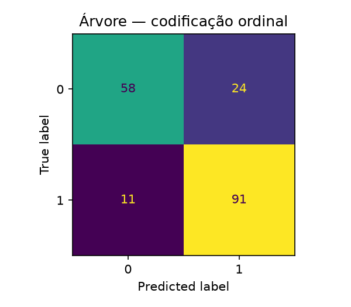
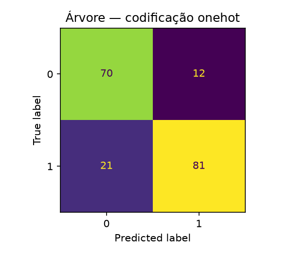

Disciplina: Aprendizado de Máquina —
PPGCC/UFPI
Professor: Doutor Vinicius Ponte Machado
Data: 26/10/2026
Integrantes:
| Integrante | Matrícula |
|---|---|
| Arthur Fernando Elvas Bohn | 20261001997 |
| Diego Cordeiro de Oliveira | 20261002180 |
| Keoma de Sousa Coelho | 20261004952 |
Base: Heart
Failure Prediction — Kaggle
Notebook:
Arvore_Decisao_Heart_Failure_mlflow.ipynb
| Sigla | Significado |
|---|---|
| BP | Pressão arterial (Blood Pressure) |
| CV | Validação cruzada (Cross-Validation) |
| DAC | Doença arterial coronariana |
| ECG | Eletrocardiograma |
| F1 | Média harmônica entre precisão e revocação |
| FC | Frequência cardíaca |
| FN | Falso negativo |
| FP | Falso positivo |
| HR | Frequência cardíaca (Heart Rate) |
| IC 95% | Intervalo de confiança de 95% |
| LVH | Hipertrofia ventricular esquerda (Left Ventricular Hypertrophy) |
| M/F | Masculino/feminino |
| MLflow | Plataforma de rastreamento de experimentos de aprendizado de máquina |
| PCA | Análise de Componentes Principais (Principal Component Analysis) |
| PPGCC/UFPI | Programa de Pós-Graduação em Ciência da Computação da Universidade Federal do Piauí |
| Prec. / Rec. | Precisão / revocação (recall) |
| SHAP | SHapley Additive exPlanations |
| SMOTE | Synthetic Minority Over-sampling Technique (sobreamostragem sintética) |
| SQLite | Banco de dados relacional leve |
| ST | Segmento ST do eletrocardiograma |
| TA/ATA/NAP/ASY | Angina típica / angina atípica / dor não anginosa / assintomático |
| TN / TP | Verdadeiro negativo / verdadeiro positivo |
| UCI | University of California, Irvine (repositório de conjuntos de dados) |
| Y/N | Sim/não |
As doenças cardiovasculares estão entre as principais causas de morte no mundo. Um modelo de triagem que identifique pacientes com maior probabilidade de doença cardíaca pode apoiar a priorização de exames e reduzir o tempo até o tratamento. Neste trabalho, o problema é uma classificação binária:
HeartDisease = 1);HeartDisease = 0).O erro de maior gravidade clínica é o falso negativo da classe 1: classificar um paciente doente como “não doente”. Nesse caso, o paciente deixa de ser tratado e pode evoluir para óbito. Por isso, além da acurácia, este trabalho dá atenção especial ao recall e ao F1 da classe 1 (e ao F1 macro, que equilibra as duas classes).
Objetivo: avaliar uma Árvore de Decisão, combinando tratamento dos dados, ajuste de hiperparâmetros e engenharia de atributos, e registrar todos os experimentos no MLflow para comparar ganhos e perdas de forma reprodutível.
A base é a Heart Failure Prediction (Kaggle,
fedesoriano), derivada do UCI Heart Disease (Detrano et
al., 1989), combinando cinco bases clínicas (Cleveland, Hungria, Suíça,
Long Beach VA e Statlog). O arquivo bases/heart.csv contém
918 registros e 12 colunas (11
atributos + alvo).
| Atributo | Tipo | Descrição |
|---|---|---|
Age |
Numérico | Idade (anos) |
Sex |
Categórico | Sexo (M/F) |
ChestPainType |
Categórico | Tipo de dor no peito (TA, ATA, NAP, ASY) |
RestingBP |
Numérico | Pressão arterial em repouso (mm Hg) |
Cholesterol |
Numérico | Colesterol sérico (mm/dl) |
FastingBS |
Binário | Glicemia em jejum > 120 mg/dl (1/0) |
RestingECG |
Categórico | ECG em repouso (Normal, ST, LVH) |
MaxHR |
Numérico | Frequência cardíaca máxima atingida |
ExerciseAngina |
Categórico | Angina induzida por exercício (Y/N) |
Oldpeak |
Numérico | Depressão do segmento ST induzida por exercício |
ST_Slope |
Categórico | Inclinação do segmento ST no pico (Up/Flat/Down) |
HeartDisease |
Binário | Alvo: 1 = doença, 0 = normal |
Legenda das siglas dos atributos: TA =
angina típica; ATA = angina atípica; NAP = dor
não anginosa; ASY = assintomático; M/F =
masculino/feminino; Y/N = sim/não; ST =
segmento ST do eletrocardiograma; LVH = hipertrofia
ventricular esquerda (Left Ventricular Hypertrophy).
| Classe | Registros | Proporção |
|---|---|---|
| 1 (com doença) | 508 | 55,34% |
| 0 (sem doença) | 410 | 44,66% |
| Total | 918 | 100% |
NaN original;
porém Cholesterol tem 172 zeros e
RestingBP tem 1 zero, fisiologicamente
implausíveis. Esses zeros foram convertidos em NaN e
imputados dentro do pipeline (sem vazamento).| Variável | Média | Desvio | Mín. | Mediana | Máx. |
|---|---|---|---|---|---|
| Age | 53,51 | 9,43 | 28 | 54 | 77 |
| RestingBP | 132,40 | 18,51 | 0 | 130 | 200 |
| Cholesterol | 198,80 | 109,38 | 0 | 223 | 603 |
| FastingBS | 0,23 | 0,42 | 0 | 0 | 1 |
| MaxHR | 136,81 | 25,46 | 60 | 138 | 202 |
| Oldpeak | 0,89 | 1,07 | −2,6 | 0,6 | 6,2 |
O modelo é uma Árvore de Decisão
(DecisionTreeClassifier) dentro de um fluxo de
processamento (Pipeline):
SimpleImputer (estratégia testada: mediana, média, moda) +
StandardScaler;OneHotEncoder ou OrdinalEncoder
(comparados);DecisionTreeClassifier.Tudo é ajustado somente no treino de cada partição (fold) da validação cruzada (CV), evitando vazamento.
RepeatedStratifiedKFold(5 folds × 2 repetições) para a
busca.GridSearchCV) com métrica de reajuste
(refit) F1 da classe 1; acurácia, precisão e recall
também são medidos.criterion (2)
× max_depth (4) × min_samples_split (3) ×
min_samples_leaf (3) × max_features (2) ×
class_weight (2) = 864 combinações por
codificação; 8.640 ajustes (fits) por codificação;
17.280 ajustes no total (one-hot + ordinal).Valores testados em cada hiperparâmetro:
| Parâmetro | Valores testados |
|---|---|
prep__num__imp__strategy |
median, mean,
most_frequent |
modelo__criterion |
gini, entropy |
modelo__max_depth |
3, 5, 7,
None |
modelo__min_samples_split |
2, 5, 10 |
modelo__min_samples_leaf |
1, 3, 5 |
modelo__max_features |
None, sqrt |
modelo__class_weight |
None, balanced |
| Fase | O que faz |
|---|---|
| 1. Configuração | Semente, MLflow (SQLite), pasta
resultados/execucao_<timestamp>/ |
| 2. Carga/limpeza | Lê bases/heart.csv; zeros de
Cholesterol/RestingBP → NaN |
| 3. Preparação | ColumnTransformer (imputação + encoding + scaler),
split 80/20, CV 5×2 |
| 4. Grid search | 864 combinações por codificação; one-hot e ordinal; log no MLflow |
| 5. Avaliação | Métricas das duas classes, IC 95%, matriz de confusão, importâncias |
| 6. Baseline | DummyClassifier(most_frequent) como referência |
| 7. Interpretação | Importâncias, plot da árvore, verificação de invariância à escala |
| 8. Ablação | Remove 1 atributo por vez; mesmos hiperparâmetros; ambas as classes |
| 9. Engenharia | 5 razões/interações clínicas; comparação sem/com |
| 10. Exportação | CSVs, JSON, PNGs e ZIP na pasta da execução; artefatos no MLflow |
| 11. MLflow | Runs pai/filhas, parâmetros, métricas, modelos e artefatos |
| Atributo derivado | Fórmula | Motivação |
|---|---|---|
FC_pct_teorica |
MaxHR / (220 − Age) |
% da FC máxima teórica |
Chol_por_Idade |
Cholesterol / Age |
colesterol relativo à idade |
BP_por_Idade |
RestingBP / Age |
pressão relativa à idade |
Oldpeak_por_FC |
Oldpeak / MaxHR |
depressão ST por batimento |
Angina_x_Oldpeak |
(ExerciseAngina == 'Y') × Oldpeak |
interação angina × ST |
As razões são calculadas linha a linha, antes da divisão (split), sem vazamento.
| Codificação | Imputação | class_weight | criterion | max_depth | max_features | min_samples_leaf | min_samples_split |
|---|---|---|---|---|---|---|---|
| one-hot | mediana | balanced | entropy | 3 | None | 1 | 2 |
| ordinal | moda | None | gini | 3 | sqrt | 1 | 2 |
A árvore escolhida ficou rasa (profundidade 3) nas duas codificações. A busca avaliou 864 combinações por codificação (17.280 ajustes no total), com F1 da classe 1 como critério.
| Codificação | Acurácia | Prec_c0 | Rec_c0 | F1_c0 | Prec_c1 | Rec_c1 | F1_c1 | F1_macro | IC95 F1_c1 |
|---|---|---|---|---|---|---|---|---|---|
| ordinal | 0,8098 | 0,8406 | 0,7073 | 0,7682 | 0,7913 | 0,8922 | 0,8387 | 0,8035 | 0,7817–0,8879 |
| one-hot | 0,8207 | 0,7692 | 0,8537 | 0,8092 | 0,8710 | 0,7941 | 0,8308 | 0,8200 | 0,7650–0,8865 |
Interpretação: a codificação ordinal tem maior F1_c1 e recall_c1 (melhor para não deixar doentes sem diagnóstico), enquanto a one-hot tem maior acurácia, precisão_c1 e F1_macro. Os intervalos de confiança do F1_c1 se sobrepõem, então a diferença não é conclusiva.
O classificador ingênuo (DummyClassifier, estratégia
most_frequent) prediz sempre a classe 1:
| Métrica | Valor |
|---|---|
| Acurácia | 0,5543 |
| Precisão_c1 | 0,5543 |
| Recall_c1 | 1,0000 |
| F1_c1 | 0,7133 |
| F1_c0 | 0,0000 |
| F1_macro | 0,3566 |
Ou seja, classificar sempre a classe majoritária já resulta em F1_c1 = 0,71; o modelo precisa superar essa referência — e supera (0,8387 no ordinal). A referência tem 0 falsos negativos da classe 1 (revocação da classe 1 = 1), mas 82 falsos positivos (toda a classe 0 incorreta), o que evidencia por que a acurácia isolada pode ser enganosa.
Cada atributo foi removido individualmente, mantendo os melhores
hiperparâmetros e class_weight=None.
| Cenário | Atributo removido | Acurácia | F1_c0 | F1_c1 | F1_macro |
|---|---|---|---|---|---|
| todos | nenhum | 0,8098 | 0,7682 | 0,8387 | 0,8035 |
| sem_RestingBP | RestingBP | 0,8207 | 0,8136 | 0,8272 | 0,8204 |
| sem_Cholesterol | Cholesterol | 0,8207 | 0,8136 | 0,8272 | 0,8204 |
| sem_FastingBS | FastingBS | 0,8207 | 0,8136 | 0,8272 | 0,8204 |
| sem_Age | Age | 0,8152 | 0,8068 | 0,8229 | 0,8149 |
| sem_ExerciseAngina | ExerciseAngina | 0,7989 | 0,7933 | 0,8042 | 0,7988 |
| sem_ST_Slope | ST_Slope | 0,7772 | 0,7630 | 0,7897 | 0,7764 |
| sem_MaxHR | MaxHR | 0,7500 | 0,6933 | 0,7890 | 0,7412 |
| sem_Sex | Sex | 0,7391 | 0,7073 | 0,7647 | 0,7360 |
| sem_ChestPainType | ChestPainType | 0,7391 | 0,7073 | 0,7647 | 0,7360 |
| sem_RestingECG | RestingECG | 0,7391 | 0,7073 | 0,7647 | 0,7360 |
| sem_Oldpeak | Oldpeak | 0,7391 | 0,7073 | 0,7647 | 0,7360 |
Interpretação: - Nenhuma remoção melhorou o
F1_c1: o conjunto completo é o melhor (0,8387). - Remover
RestingBP, Cholesterol ou
FastingBS melhora a acurácia (0,8207), o F1_c0
(0,8136) e o F1_macro (0,8204), mas piora o recall/F1
da classe 1 — compromisso entre as classes. - Remover
ST_Slope ou MaxHR piora o
F1_c1, indicando que são informativos. - Remover Sex,
ChestPainType, RestingECG ou
Oldpeak leva o F1_c1 a 0,7647 (a árvore passa a usar outro
caminho de decisão). - Conclusão: para maximizar F1_c1,
manter todos os atributos; para equilibrar as classes
(F1_macro), remover
RestingBP/Cholesterol/FastingBS é
uma alternativa.
| Cenário | Nº atributos | Acurácia | F1_c0 | F1_c1 | F1_macro | F1_CV |
|---|---|---|---|---|---|---|
| sem_engenharia | 11 | 0,8098 | 0,7682 | 0,8387 | 0,8035 | 0,8604 |
| com_engenharia | 16 | 0,8261 | 0,7838 | 0,8545 | 0,8192 | 0,7946 |
Melhora no conjunto de teste: F1_c1 +0,0158 (0,8387 → 0,8545), recall_c1 +0,0294 (0,8922 → 0,9216), acurácia +0,0163, F1_macro +0,0157.
Limitação importante: o F1 da validação cruzada (CV) apresentou redução (0,8604 → 0,7946). Ou seja, a melhora no conjunto de teste não é confirmada pela CV e pode ser efeito da divisão específica (184 amostras). A engenharia deve ser tratada como com potencial, porém não conclusiva, até validação externa.
Com o teste de 184 pacientes (82 da classe 0 e 102 da classe 1):
| Modelo | TN | FP | FN (classe 1) | TP | Recall_c1 | F1_c1 | F1_CV |
|---|---|---|---|---|---|---|---|
| com_engenharia | 58 | 24 | 8 | 94 | 0,9216 | 0,8545 | 0,7946 |
| ordinal | 58 | 24 | 11 | 91 | 0,8922 | 0,8387 | 0,8604 |
| one-hot | 70 | 12 | 21 | 81 | 0,7941 | 0,8308 | 0,8550 |
| baseline | 0 | 82 | 0 | 102 | 1,0000 | 0,7133 | — |


O erro de maior gravidade clínica: o falso
negativo da classe 1 (paciente doente previsto como “não
doente”). No conjunto de teste, o
com_engenharia é o melhor para triagem:
8 falsos negativos contra 11 do ordinal e 21 do
one-hot, com o mesmo número de falsos positivos (24) e
o maior F1_c1 (0,8545). Limitação: o
F1 da CV apresentou redução (0,7946 vs 0,8604 do
ordinal), então a melhora no teste não é confirmada pela
CV e pode refletir a variância do conjunto de teste reservado.
Os dois melhores para triagem são com_engenharia e
ordinal (8 e 11 falsos negativos); a escolha é um compromisso
entre desempenho no teste e robustez na CV, e exige validação
externa.
Em consonância com a solicitação da atividade, a tabela abaixo resume as principais transformações de preparação dos dados e o efeito nas métricas (melhoria ou piora):
| Transformação | Antes | Depois | Efeito |
|---|---|---|---|
| Codificação one-hot → ordinal | F1_c1 0,8308 | 0,8387 | ganho no F1_c1/recall |
| Imputação (mediana × moda) | — | — | escolhida pela grade |
class_weight=balanced |
≈ igual | ≈ igual | sem efeito (desbalanceamento leve) |
Escalonamento (StandardScaler) |
idêntico | idêntico | invariante (árvore) |
Remover
RestingBP/Cholesterol/FastingBS |
F1_c1 0,8387 | 0,8272 | piora F1_c1, melhora F1_macro |
Remover ST_Slope/MaxHR |
F1_c1 0,8387 | 0,7897 / 0,7890 | piora |
| Engenharia de atributos | F1_c1 0,8387 | 0,8545 (teste) | melhora no teste, redução na CV |
Variação de hiperparâmetros one-hot (max_depth=4,
min_samples_leaf=10) |
F1 0,8308 | 0,8119 | piora |
Todos os experimentos foram registrados no MLflow, no experimento
heart_failure_arvore_decisao, com
rastreamento (tracking) local em SQLite (mlflow.db) e
artefatos em mlruns/.
class_weight), métricas (F1, acurácia,
precisão, recall, F1 macro, IC 95%), modelo
(mlflow.sklearn.log_model) e artefatos
(CSVs, JSON, PNGs, ZIP).docs/mlflow_runs.csv (exportada via
mlflow.search_runs), com as colunas de execução (run),
status, data, parâmetros e métricas.Execuções principais: arvore_onehot,
arvore_ordinal, baseline_classe_majoritaria,
ablacao_atributos (com 12 execuções filhas),
engenharia_features (com sem_engenharia e
com_engenharia) e relatorio_artefatos.
| Execução | O que mudou | Melhor F1_c1 | F1_macro | Efeito |
|---|---|---|---|---|
20261022_081800 |
Versão inicial: one-hot × ordinal + baseline | 0,8387 | — | referência (só classe 1) |
20261022_083734 |
+ ablação com class_weight None/balanced |
0,8387 | 0,8035 | balanced ≈ None |
20261022_090449 |
Ablação simplificada (sem balanced) |
0,8387 | — | foco didático |
20261022_093147 |
+ engenharia de atributos | 0,8545 (com) | 0,8192 (com) | melhora no teste, redução na CV |
20261022_094826 |
Variação de hiperparâmetros one-hot (max_depth=4,
min_samples_leaf=10) |
0,8119 (one-hot) | — | piorou o teste |
20261026_075517 |
Métricas para as duas classes (versão final) | 0,8387 (ordinal) / 0,8545 (com eng.) | 0,8035 / 0,8192 | versão consolidada |
Considerações sobre a evolução: 1. Os
hiperparâmetros escolhidos pela grade ficaram estáveis
(profundidade 3), exceto a variação de 094826, que
piorou o teste. 2. A engenharia de
atributos foi a única mudança que apresentou melhora no
conjunto de teste (F1_c1 0,8387 → 0,8545), mas
apresentou redução na CV (0,8604 → 0,7946) — ganho
não robusto. 3. A ablação mostrou que
remover atributos não melhora o F1_c1; só melhora o
F1_macro ao custo da revocação (recall) da classe 1. 4.
class_weight='balanced' não teve efeito
relevante, coerente com o desbalanceamento leve (55/45). 5. A mudança
para reportar as duas classes alterou a interpretação:
o que parecia “melhor” pela classe 1 nem sempre é melhor no
F1_macro.
| Trabalho | Contribuição | Relação com este trabalho |
|---|---|---|
| Qadri et al. (2023), IEEE Access | Técnica de engenharia de atributos (feature engineering) para predição de doença cardíaca | Justifica a criação de atributos derivados |
| Abass & Bathla (2025), Springer | Aprendizado de máquina + engenharia de atributos | Reforça a engenharia como etapa |
| Gárate-Escamilla et al. (2020), Informatics in Medicine Unlocked | Seleção de atributos + PCA | Compara seleção/transformação |
| Hasnat et al. (2025), arXiv | Engenharia de atributos + SHAP + árvores substitutas | Interpretabilidade |
| Page et al. (1970), Circulation | Idade, colesterol e triglicerídeos na predição de DAC | Base para Chol_por_Idade |
| Folsom et al. (2003), Diabetes Care | Fatores de risco para DAC | Contexto clínico |
| Detrano et al. (1989) / Janosi et al. (1988) | Base UCI Heart Disease | Origem dos dados |
| Fox et al. (1971) | Fórmula FCmax ≈ 220 − idade |
Base de FC_pct_teorica |
Justificativa das razões: as variáveis originais
(MaxHR, Oldpeak, Cholesterol,
RestingBP, ExerciseAngina) são indicadores
clínicos conhecidos. As razões buscam normalizar por idade/FC e capturar
interações (angina × depressão ST), o que ajuda a árvore a representar
relações “diagonais” com menos cortes. A literatura apoia a engenharia
de atributos em doença cardíaca, mas as razões específicas aqui
testadas são hipóteses exploratórias e precisam de validação
externa.
Limitações: - Base pequena (918) e teste de apenas 184 pacientes → intervalos de confiança largos. - Uma única árvore (sem ensemble) e sem validação externa. - A engenharia apresentou melhora no conjunto de teste, mas redução na CV → ganho não conclusivo. - Não foram testados ajuste de limiar, SMOTE (Synthetic Minority Over-sampling Technique) ou outros modelos.
com_engenharia (codificação ordinal + 5 atributos
derivados), com 8 falsos negativos, revocação da classe
1 (recall_c1) = 0,9216 e F1_c1 = 0,8545 — mesmo número de
falsos positivos (24) do ordinal.com_engenharia tem F1_CV =
0,7946).RestingBP/Cholesterol/FastingBS
melhora o F1_macro, mas aumenta o risco de falso negativo da classe
1.com_engenharia no
teste, ordinal como alternativa robusta), avaliar ajuste de
limiar e validar em base externa antes de uso real.